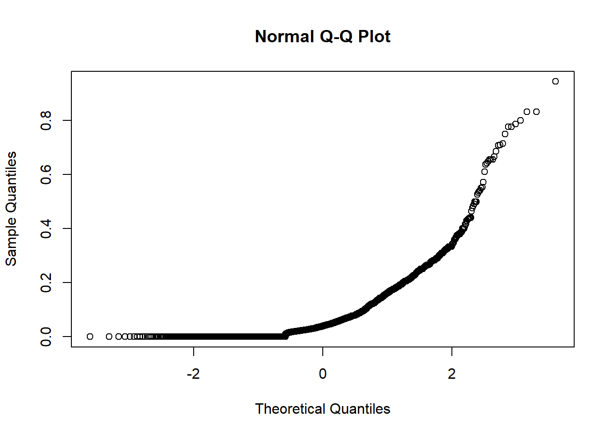
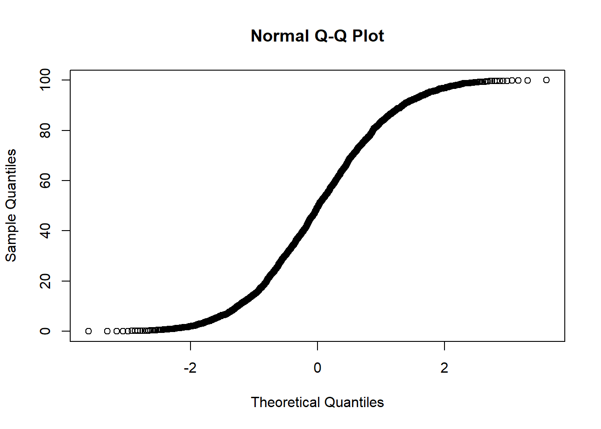
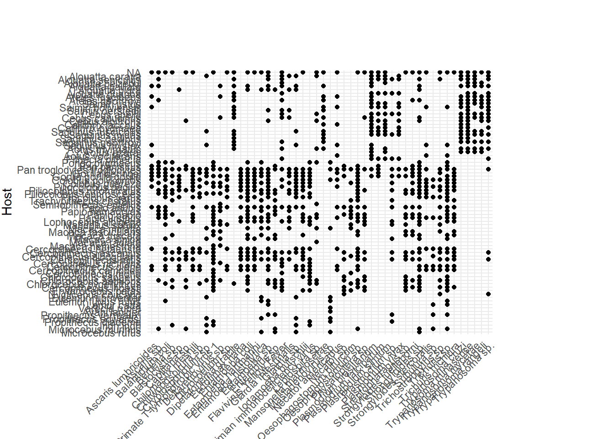
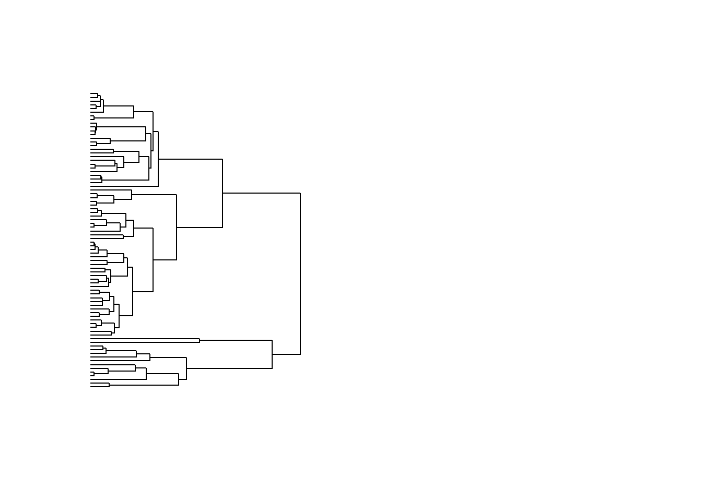

In this assignment, I am replicating parasite sharing in the primate population as conducted by Cooper et al. (2012). The original study aimed to understand phylogenetic host specificity and parasite sharing in primates using the Global Mammal Parasite Database from the Charles Nunn lab.
They found that closely related primate species share more parasites than distant ones.
For this individual project, I am reanalyzing parasite similarity for each pair of primates, examining whether the divergence time of the primate host is associated with parasite sharing within primates using the same dataset. My work will be outlined as follows:
(1) Descriptive Statistics: I will report the number of hosts and parasites in both the original dataset and a filtered dataset containing hosts affected by at least 10 parasites.
(2) Calculate Parasite Similarity and Divergence: I will compute the parasite similarity and divergence for each pair of host primates and analyze the association using a linear model.
(3) Plot the Phylogenetic Distribution of Primate Hosts: I will create a plot illustrating the phylogenetic distribution of primate hosts, focusing specifically on the most common parasite.
Packages
library(ape)
Warning: package 'ape' was built under R version 4.3.3
library(tidyverse)
Warning: package 'tidyverse' was built under R version 4.3.3
Warning: package 'ggplot2' was built under R version 4.3.2
Warning: package 'tibble' was built under R version 4.3.2
Warning: package 'tidyr' was built under R version 4.3.3
Warning: package 'readr' was built under R version 4.3.2
Warning: package 'purrr' was built under R version 4.3.2
Warning: package 'dplyr' was built under R version 4.3.3
Warning: package 'stringr' was built under R version 4.3.2
Warning: package 'forcats' was built under R version 4.3.2
Warning: package 'lubridate' was built under R version 4.3.2
── Attaching core tidyverse packages ──────────────────────── tidyverse 2.0.0 ──
✔ dplyr 1.1.4 ✔ readr 2.1.5
✔ forcats 1.0.0 ✔ stringr 1.5.1
✔ ggplot2 3.5.1 ✔ tibble 3.2.1
✔ lubridate 1.9.3 ✔ tidyr 1.3.1
✔ purrr 1.0.2
── Conflicts ────────────────────────────────────────── tidyverse_conflicts() ──
✖ dplyr::filter() masks stats::filter()
✖ dplyr::lag() masks stats::lag()
✖ dplyr::where() masks ape::where()
ℹ Use the conflicted package (<http://conflicted.r-lib.org/>) to force all conflicts to become errors
library(ggplot2)
Variables
# Host <- primate host species# Parasite <- species of parasites# Type <- parasite type such as protozoa, helminth# host_10_data <- name of the data for only primate host that are infected by at least 10 parasites# Divergence_Time <- diveregence time between pair of host# Parasite_similarity <- jaccard index for each pair of host
Data cleaning
I took off row in which species are not fully described because I need fully described species for the phylogeny. I also took off row that are not listed in the 10k tree data.
For the raw data, there are 108 primate species host and 546 parasites in total. There were 58 bacteria, 7 fungus, 273 helminths, 108 protozoa and 100 virus.
Filter parasite data
It was written under sampling biase for the original study that due to the sensitivity of the sampling effort, they only kept host species that are infected by at least 10 parasites. I am also doing that in the following code.
# filter only host that have at least 10 parasiteshost_parasite_counts <- d %>%# countgroup_by(Host) %>%summarise(unique_parasites =n_distinct(Parasite))host_10 <- host_parasite_counts %>%filter(unique_parasites >=10) %>%# this is the 10 parasitespull(Host)host_10_data <- d %>%filter(Host %in% host_10)# filter
Now, let’s describe the parasites and hosts in the filtered data set.
For the data that includes only host infected by at least 10 parasite species, there are 80 primate species host and 524 parasites in total. There were 57 bacteria, 5 fungus, 260 helminths, 102 protozoa and 100 virus.
Inferential analysis
Creating parasite similarity and divergence time data for each pair host specie
Now, I am
(1) Calculating parasite sharing among a pair of primate host using jaccard similarity with a formula: Parasite similarity = a/(a+b+c) where a represent the number of parasites shared by host species B and C, b is the number of parasite unique to species B and c is number of parasites unique to species C.
(2) Calculating the divergence time between the pairs of host by tracing back tp their most recent common ancestor in phylogenetic tree and measuring the time since their divergence.
(3) Creating a new data with the pair of host (Host1 and Host2) with Parasite similarity and dinvergence time
# Function calculating the number of shared and unique parasites between two hostscalculate_parasite_counts <-function(host1, host2, parasite_data) { parasite_species_1 <-unique(parasite_data$Parasite[parasite_data$Host == host1]) parasite_species_2 <-unique(parasite_data$Parasite[parasite_data$Host == host2]) shared_parasite <-intersect(parasite_species_1, parasite_species_2) unique_parasite_species_1 <-setdiff(parasite_species_1, parasite_species_2) unique_parasite_species_2 <-setdiff(parasite_species_2, parasite_species_1)return(list(shared_parasite =length(shared_parasite),unique_parasite_species_1 =length(unique_parasite_species_1),unique_parasite_species_2 =length(unique_parasite_species_2)))}# Function calculating parasite similarity between pairs of hostscalculate_parasite_similarity <-function(hosts, parasite_data) {# Initialize an empty data frame to store results similarity_data <-data.frame(Host1 =character(),Host2 =character(),Parasite_Similarity =numeric(),stringsAsFactors =FALSE)# Loop through all pairs of hostsfor (i in1:(length(hosts) -1)) {for (j in (i +1):length(hosts)) { host1 <- hosts[i] host2 <- hosts[j]# Calculate parasite counts counts <-calculate_parasite_counts(host1, host2, parasite_data) shared_parasite <- counts$shared_parasite unique_parasite_species_1 <- counts$unique_parasite_species_1 unique_parasite_species_2 <- counts$unique_parasite_species_2# Calculate parasite similarity index similarity_index <- shared_parasite / (shared_parasite + unique_parasite_species_1 + unique_parasite_species_2)# Add data to similarity_data data frame similarity_data <-rbind(similarity_data, data.frame(Host1 = host1,Host2 = host2,Parasite_Similarity = similarity_index)) } }return(similarity_data)}# Function to calculate divergence time between pairs of hostscalculate_divergence_time <-function(host1, host2, phylogenetic_tree) {# Here you need to implement the logic to calculate divergence time between host1 and host2# This might involve traversing the phylogenetic tree and finding the common ancestor# Placeholder logic (replace with actual calculation) divergence_time <-runif(1, min =0, max =100)return(divergence_time)}# Function to calculate both similarity and divergence timecalculate_similarity_and_divergence_time <-function(hosts, parasite_data, phylogenetic_tree) { similarity_data <-calculate_parasite_similarity(hosts, parasite_data)# Add divergence time to similarity_data similarity_data$Divergence_Time <-sapply(1:nrow(similarity_data), function(i) { host1 <- similarity_data[i, "Host1"] host2 <- similarity_data[i, "Host2"]calculate_divergence_time(host1, host2, phylogenetic_tree) })return(similarity_data)}# Extract unique host species IDshosts <-unique(host_10_data$Host)# Calculate parasite similarity and divergence time between all pairs of hostscombined_data <-calculate_similarity_and_divergence_time(hosts, host_10_data, single_tree)# Print the resulting data frameprint(head(combined_data))
Now, I have the combined_data which is the data that have the pair of primate hosts, parasite similarity and the divergence time.
Before I run linear model to look at the association between parasite similarity and divergence time, I would like to test the variable normality first.
qqnorm(combined_data$Parasite_Similarity)

# QQ plot for divergence timeqqnorm(combined_data$Divergence_Time)

The results show that p for both variables are non-normal. Now, I will have to transform the data using log.
To see the association between parasite similarity and divergence time between the pair of species host, I am going to use linear model.
Linear regression model
Becasue there is 0.000 value on the Parasite similarity column that turn to inf when I log them, I am going to add a small positive offset to the variables
offset <-0.00001# Adjust this value as neededcombined_data$log_Parasite_Similarity <-log(combined_data$Parasite_Similarity + offset)combined_data$log_Divergence_Time <-log(combined_data$Divergence_Time + offset)# linear regression modelmodel <-lm(log_Parasite_Similarity ~ log_Divergence_Time, data = combined_data)summary(model)
Call:
lm(formula = log_Parasite_Similarity ~ log_Divergence_Time, data = combined_data)
Residuals:
Min 1Q Median 3Q Max
-6.386 -6.331 1.904 2.906 5.071
Coefficients:
Estimate Std. Error t value Pr(>|t|)
(Intercept) -5.23955 0.26122 -20.06 <2e-16 ***
log_Divergence_Time 0.02456 0.07025 0.35 0.727
---
Signif. codes: 0 '***' 0.001 '**' 0.01 '*' 0.05 '.' 0.1 ' ' 1
Residual standard error: 4.059 on 3158 degrees of freedom
Multiple R-squared: 3.872e-05, Adjusted R-squared: -0.0002779
F-statistic: 0.1223 on 1 and 3158 DF, p-value: 0.7266
Since the p> 0.05, the results indicated that is no association between divergence time and parasite similarity in primate population. Although r2 = exp(0.003235) = 1.0003237, it is low enough for the p-value is not significant, suggesting that divergence time alone, does not explain much of variability in parasite similarity.
Visualization
Now, I am going to plot the phylogenetic distribution of primate hosts for only the most common parasite in the replacated data.
(1) I need to make sure that each tips of the tree match with the parasite data
(2) choose the most common parasite (n=50) because there are a lot of them
(3) Plot host-parasite matrix
(4) attach phylogenetic tree with the tree
Adjusting tree tips
I change each host name to match with the tips of the tree, then create a new data with the tree tip.label
Now, I am ploting both the tree and the parasite-host matrix
#Choose the most common parasite n=50library(ggplot2)sample_parasites <-function(data) {# Identify the most common parasites most_common <- data %>%group_by(Parasite) %>%summarise(host_count =n_distinct(Host)) %>%arrange(desc(host_count)) %>%slice_head(n =50) %>%pull(Parasite)# Randomly sample parasites that affect at least 10 hosts random_sample <- data %>%group_by(Parasite) %>%filter(n_distinct(Host) >=10) %>%ungroup() %>%distinct(Parasite, .keep_all =TRUE) %>%sample_n(size =50-length(most_common), replace =TRUE)# Combine the most common and random samples sampled_parasites <-bind_rows( data %>%filter(Parasite %in% most_common), random_sample )return(sampled_parasites)}# Apply the function to d_newd_sampled <-sample_parasites(d_new)d_sampled$Presence <-1# I have to reoder the host in the tree to match the orderdesired_order <-rev(c("Alouatta caraya", "Alouatta seniculus","Alouatta belzebul", "Alouatta palliata","Alouatta pigra", "Alouatta guariba","Ateles fusciceps", "Ateles geoffroyi", "Saimiri ustus", "Saimiri boliviensis", "Saimiri oerstedii", "Cebus apella" , "Cebus capucinus", "Cebus albifrons", "Callithrix jacchus", "Callithrix pygmaea", "Saguinus fuscicollis", "Saguinus midas", "Saguinus oedipus", "Saguinus geoffroyi", "Saguinus mystax", "Aotus trivirgatus", "Aotus azarai", "Aotus vociferans", "Pithecia pithecia" , "Pongo pygmaeus", "Pan paniscus", "Pan troglodytes troglodytes", "Gorilla beringei","Gorilla gorilla gorilla","Colobus polykomos", "Colobus guereza", "Colobus angolensis" , "Piliocolobus badius", "Piliocolobus rufomitratus", "Piliocolobus tephrosceles", "Procolobus verus", "Trachypithecus cristatus", "Semnopithecus entellus", "Papio anubis", "Papio hamadryas","Papio papio", "Papio ursinus", "Lophocebus albigena", "Mandrillus sphinx", "Macaca mulatta", "Macaca fascicularis", "Macaca fuscata" , "Macaca sinica","Macaca radiata", "Macaca nemestrina", "Cercopithecus petaurista" ,"Cercopithecus ascanius", "Cercopithecus albogularis", "Cercopithecus mitis", "Cercopithecus nictitans", "Cercopithecus diana" , "Cercopithecus campbelli", "Cercopithecus mona", "Chlorocebus sabaeus", "Chlorocebus aethiops", "Chlorocebus pygerythrus", "Cercopithecus lhoesti", "Erythrocebus patas", "Nycticebus coucang", "Galago demidoff", "Eulemur rubriventer", "Eulemur fulvus rufus" , "Eulemur macaco macaco", "Lemur catta" , "Varecia rubra", "Avahi laniger" , "Propithecus verreauxi" , "Propithecus edwardsi", "Propithecus diadema", "Indri indri", "Microcebus murinus", "Microcebus rufus" )) # Convert "Host" into the desired orderd_sampled$Host <-factor(d_sampled$Host, levels = desired_order)# Plotpar(mfrow =c(1, 2))gg_plot <-ggplot(d_sampled, aes(x = Parasite, y = Host, color =as.factor(Presence))) +geom_point() +scale_color_manual(values =c("black", "white"), labels =c("Absent", "Present")) +labs(x ="Parasite", y ="Host", color ="Presence") +theme_minimal() +theme(legend.position ="bottom",axis.text.x =element_text(angle =45, hjust =1),plot.margin =margin(58, 100, -100, 1, "pt"))plot(gg_plot)

plot.phylo(tree[[1]], edge.color ="black", edge.width =1, font =1, direction ="left", cex =0.5, show.tip.label =FALSE)

I saved a colpy of this visualization in the folder image. I used R file to do the visualization to see the plot and tree together.
Discussion
The study was done in 2012, and the data Mammal Parasite Database from the Charles Nunn lab have been updated a lot, a reason why, I have 80 host that are infected by at least 10 parasite whereas the original data only contain 35 host species. The number of parasites are also different. therefore, my visualization and analysis have many hosts compared to the original data.
They found significant association between Parasite similarity and Divergence time, and I did not. It might be due to the analysis difference. I used only divergence time and linear model, they use many variables, apparently they used glm and included Body mass difference, group size, geographic range overlap and distance, temperature difference, precipitation and terrestriality. I did not have access those data unfortunately.
There are host that have parasite data but not found in the 10k tree, so I had to take them off. I also need to take off host with species sp. (eg. Papio sp.) becasue they are not listed in the 10k tree. It was unclear how they did the divergence time, so I decided to do with pairs of host by tracing back their most recent common ancestor. I did not include the Jaccard similarity using geographic data because I do not have access to the data.